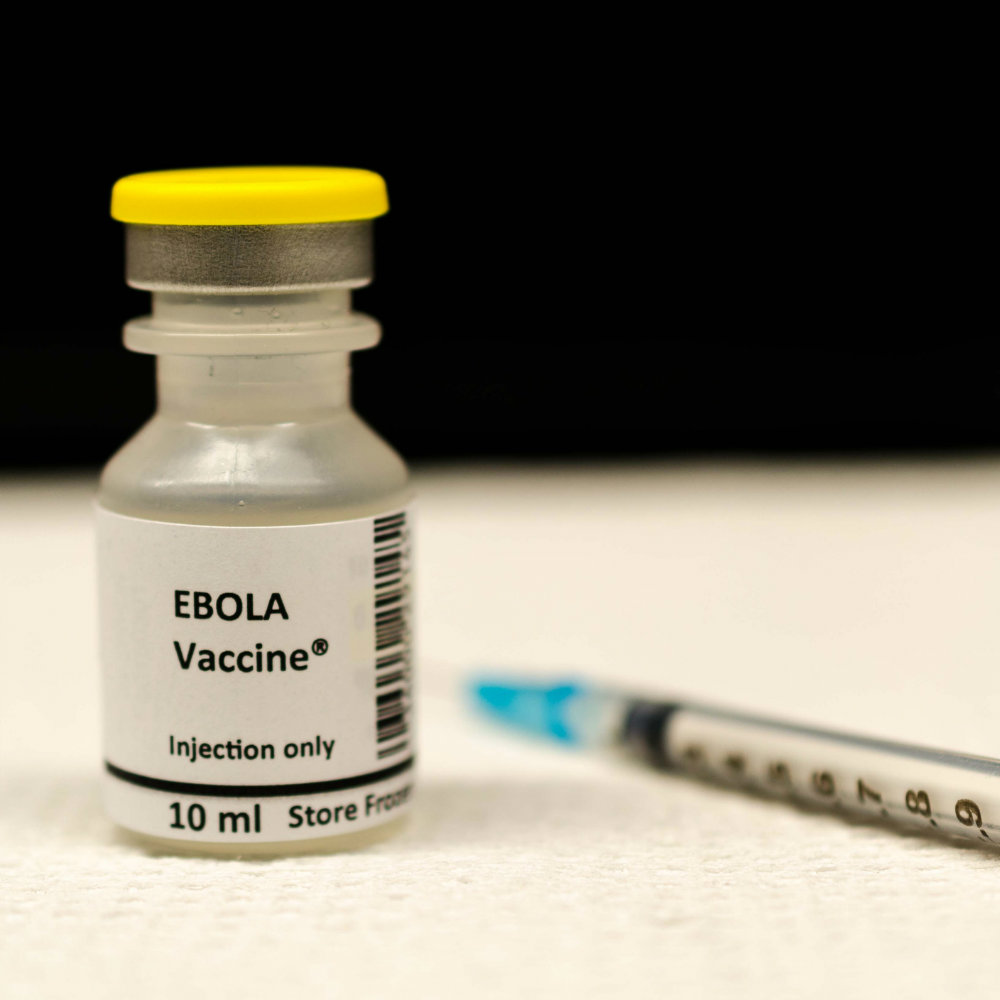

Question: How might we find an ultimate cure to stop the spread of Ebola?
Theory-If we can find out what bats have in their DNA that protects them from showing harmful ebola symptoms, then put that key factor into a human's DNA, humans will be immune to ebola as well.
The Process Behind Our Prototype

After many disagreements and complications, our team finally came to a solid conclusion. Initally, we started with a whole other idea. Then, we realized many factors that would come into play and decided that we needed to adjust some things. Concludingly, we decided that we were going to do something extrodinary; we decided to find a method to theoretically find a cure to the ebola virus.
The current solution is nothing. By that, we mean there is no cure. Our protype is a method to finding a cure. If all goes right, eventually we will have discovered the cure for the ebola virus. When an ebloa outbreak occurs in today's world, thoes who are infected are quarentined. this process is very isolatingf and emotionally depressing for the victim. If we can proceed with our "cure", this will no longer be the case. We can vaccinate the majority of a comunity to create herd immunity.
Description of Prototype
Our prototype consists of a small dart that is shot from a rifle then sticks into a bat eventually falling off. Bats, specifically fruit bats are the main vectors of ebola. Therefore, fruit bats are the main targets. Then, that dart will have a chip which sends the animal's DNA to a program that scientists have installed in their computer system. Ultimately, they will be able to see all the amino acid break downs and through research, discover which protein that animal has prevents it from showing harmful symptoms of ebola. After testing, by inserting the different proteins in other animals and finding which protein prevents harmful symptoms. Theoretically, if we give that key protein into a human's DNA through vaccination, they too will show no harmful symptoms. In other words, they will be safe. Furthermore, this procedure can also be performed on other wild animals, and pets to keep the communities safe from the horrible viral infection.